Applications of Machine Learning in Chemical Process Outcomes Prediction
Five-Day Training Programme | July 2025
Date: 07.07.2025 – 11.07.2025
Time: 9:30 AM – 4:00 PM
Venue: TP404 – Smart Class Room
Registered Participants: 54
Convener
Dr. Jeyalakshmi R, Professor, Department of Chemistry, SRMIST
Co-Conveners
Dr. V. Sudha, Associate Professor, Department of Chemistry, SRMIST
Dr. V. Rajaram, Associate Professor, NWC, SRMIST
Resource Persons
Prof. Dr. Deva Priyakumar, IIIT Hyderabad
Dr. Tarak Patra, IIT Madras
Dr. Mudit Dixit, CSIR–CLRI, Chennai
Ms. Urmila Kishore, Exafluence Pvt. Ltd., Chennai
Dr. Abhinav S. Raman, IIT Madras
Ms. Subashree P, Saint-Gobain, India
Dr. K. B. Sundhara Kumar, Shiv Nadar University, Chennai
Dr. Anitha R, SVCE, Sriperumbudur
Dr. Shobana Devi A, SRMIST
Dr. P. Vijayakumar, SRMIST
Dr. D. Hemavathi, SRMIST
Dr. Srividhya S, SRMIST
Dr. C. Sherin Shibi, SRMIST
Workshop Highlights
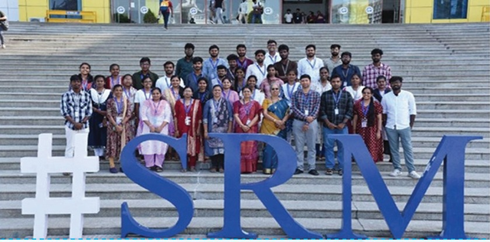
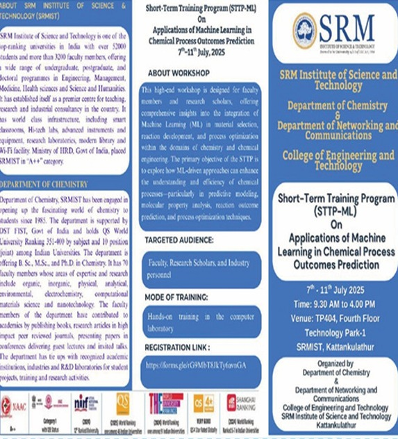
Event Summary
The five-day training program successfully provided participants with an in-depth understanding
of machine learning applications in chemical process optimization. Faculty members, research
scholars, and postgraduate students gained practical exposure to data-driven modeling,
predictive analytics, and computational techniques applicable to chemical processes, materials
research, and environmental analysis.
The interdisciplinary approach enabled participants to integrate machine learning with
traditional chemical engineering methods, enhancing analytical and problem-solving skills.
Through hands-on sessions, discussions, and collaborative exercises, attendees learned to
design, implement, and evaluate predictive models for real-world chemical processes.
Overall, the program fostered research interest, encouraged innovation, and equipped participants
with industry-relevant machine learning skills.
Diving Deep into the Next Generation Intelligent Transportation Systems
Six-Day Training Programme | July 2025
Date: 21.07.2025 – 26.07.2025
Time: 9:30 AM – 4:30 PM
Venue: TP 404 – 405
Registered Participants: 52
Conveners
Dr. S. Murugaanandam, Associate Professor, NWC
Dr. A. Prabhu Chakkaravarthy, Assistant Professor, NWC
Dr. P. Banu Priya, Assistant Professor, NWC
Co-Conveners
Dr. Venkatesh K, Associate Professor, NWC
Dr. Suresh A, Associate Professor, NWC
Dr. Krishnaraj N, Professor, NWC
Resource Persons
Dr. Srinivasalu Reddy, NIT Trichy
Dr. Rajkumar Soundrapandiyan, VIT – Vellore
Dr. Preeth Raguraman, IIITDM Kancheepuram
Dr. Rahul Raman, IIITDM Kancheepuram
Mr. Jeevananth, CEO, Pebbles Electronics, Coimbatore
Mr. Saravana Pandian S A, Embien Technologies India Pvt. Ltd.
Workshop Highlights
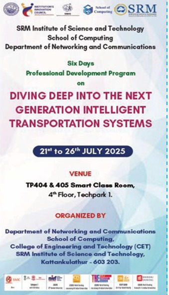
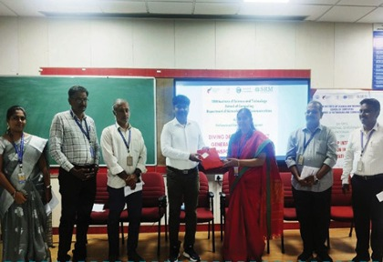
Event Summary
The six-day program successfully provided participants with a thorough understanding of
next-generation intelligent transportation systems and the technologies driving them,
including artificial intelligence, Internet of Things (IoT), machine learning, and cybersecurity.
Participants gained practical insights into smart traffic management, autonomous vehicles,
V2X communication, and AI-based decision-making, strengthening both theoretical foundations
and hands-on competencies.
The sessions fostered collaboration between academia and industry, encouraging knowledge
exchange and innovative thinking. Key outcomes included enhanced awareness of ITS
frameworks, improved cybersecurity competencies, and exposure to emerging trends such as
emotionally intelligent vehicles. Overall, the program bridged knowledge gaps, inspired
participants toward research and development in transportation technologies, and equipped
them with skills to contribute effectively to smart, safe, and sustainable mobility solutions.
Dr. M. Lakshmi, Professor & Head,
Department of Networking and Communications, SRMIST
Co-Conveners
Dr. T. Preethiya, Assistant Professor, NWC
Dr. G. Abinaya, Assistant Professor, NWC
Dr. G. Ramya, Assistant Professor, NWC
Resource Persons
Dr. Athiyaman Balakrishnan, NCMRWF, Ministry of Earth Sciences
Dr. M. Dhanalakshmi, NCCR, Chennai
Dr. Latha Ganesan, NIOT, Chennai
Dr. A. Malarkodi, NIOT, Chennai
Dr. D. Sathianarayanan, NIOT, Chennai
Dr. M. Kailasam, ICAR–CIBA, Chennai
Dr. S. Sakthivel Murugan, NITTTR, Chennai
Dr. M. Lakshmi, SRMIST
Dr. S. Sajimol, NCCR, Chennai
Dr. V. Sobhana Devi, Madras Christian College, Chennai
Workshop Highlights
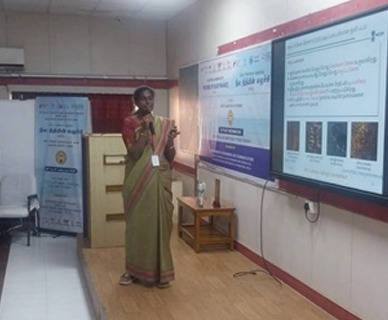
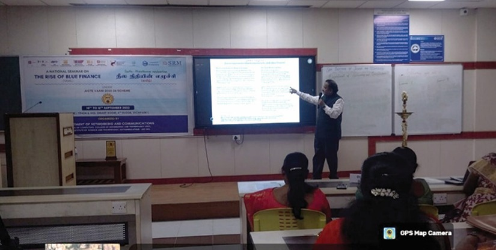
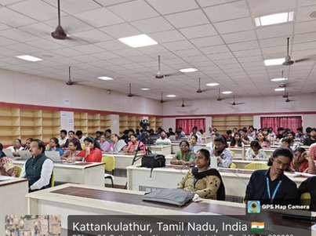
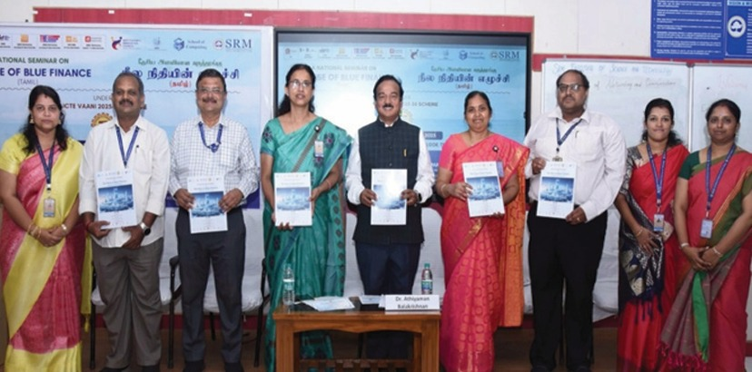
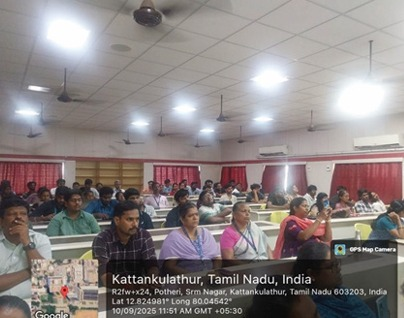
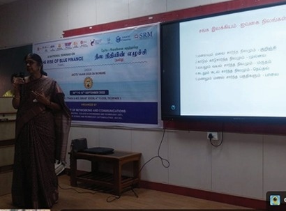
Event Summary
The AICTE–ATAL FDP on “The Rise of Blue Finance” focused on promoting awareness
and interdisciplinary understanding of sustainable ocean and marine resource management.
Aligned with India’s Blue Economy Vision 2047, the three-day program explored the
integration of finance, technology, and environmental stewardship.
Experts from NIOT, NCCR, NCMRWF, CMFRI, and industry shared insights on digital technologies,
marine data analytics, climate impact assessment, and policy frameworks. Participants learned
how artificial intelligence, IoT, and remote sensing can enable data-driven blue economy projects
aligned with the United Nations Sustainable Development Goals (SDGs).
Through interactive sessions, case studies, and discussions, the FDP fostered collaboration
among academia, industry, and policymakers, encouraging innovation, entrepreneurship, and
sustainability in India’s coastal sectors. The event concluded with reflections from participants
and certificate distribution.
Dive into Autonomy: Five-Day Hands-On Workshop on Autonomous Underwater Vehicles
Dr. Sakthivel Murugan Santhanam, Professor, NITTTR, Chennai
Dr. S. B. Pranesh, Scientist-F, NIOT (Ministry of Earth Sciences), Chennai
Mr. Yashwanth Chityala, Senior Robotics Design Engineer, Trio Tech Design Pvt. Ltd., Chennai
Mr. E. Raja, CEO, Thynkloop, Chennai
Mr. Vignesh Karthikeyan & Team, Product Development & Design Engineer, Planys Technologies, Chennai
Dr. Radhakrishna Sanka, Oceanautics Pvt. Ltd., Visakhapatnam
Dr. Harikrishnan C. S., Scientist-E, C-DAC, Trivandrum
Mr. Sundar Ranganathan, Scientist-E, Ocean Observation Systems, NIOT, Chennai
Dr. R. Ramesh, Scientist-F & Deputy Project Director, Deep Ocean Human Submersible MATSYA-6000, NIOT, Chennai
Workshop Highlights
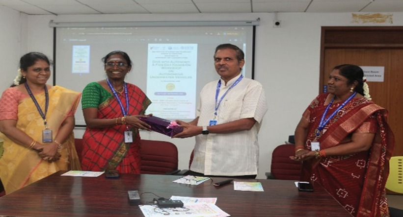
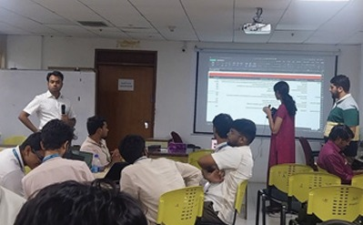
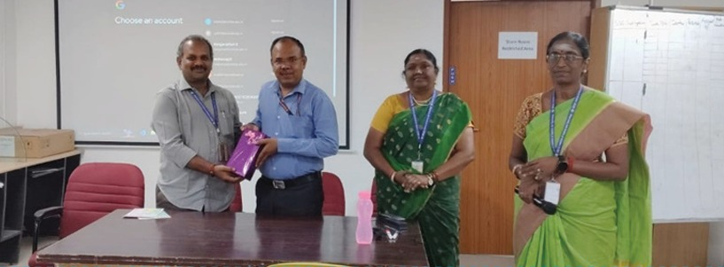
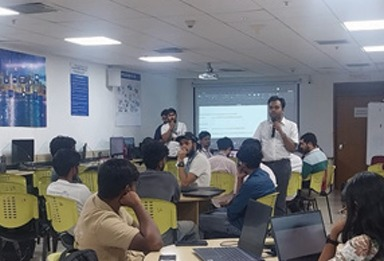
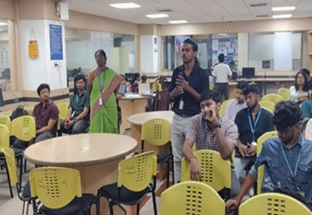
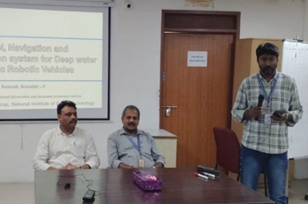
Event Summary
The five-day hands-on workshop provided participants with an in-depth understanding of
Autonomous Underwater Vehicles (AUVs), integrating theoretical concepts with
practical exposure in underwater robotics. Participants explored AUV architecture, propulsion
systems, navigation techniques, embedded intelligence, control strategies, and underwater
communication systems.
Expert sessions delivered by academicians, scientists, and industry professionals from NITTTR,
NIOT, C-DAC, Planys Technologies, Trio Tech Design, Thynkloop, and Oceanautics Pvt. Ltd. enriched
the learning experience with real-world insights into marine robotics and deep-sea exploration.
Hands-on sessions enabled participants to design AUV prototypes, integrate sensors, and simulate
thruster control using ROS, Gazebo, and MOOS-IvP.
The workshop fostered collaboration among students, researchers, and industry professionals and
concluded with project pitching, expert feedback, and certificate distribution—celebrating
innovation, research curiosity, and technical excellence in underwater autonomy.